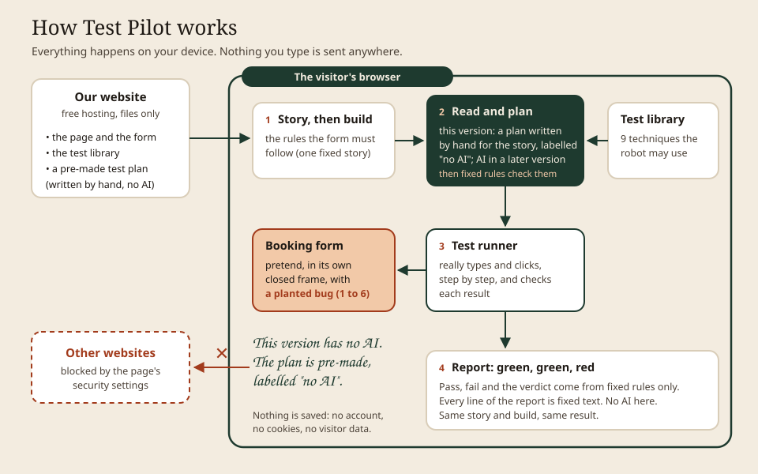

Can a robot find the bug before your customers do?
A test robot gets a small booking form and the story it was made from. It plans the tests, really runs them on the form in front of you, and tells you whether it is ready to ship, and why.
Report rules
Tests
The AI got this wrong
These plan items were not run, because they failed the check.
Not tested
How it works: the bugs
The form can run clean or with one of six realistic bugs. They are planted on purpose for this demo, and the plan is never told which one is switched on.
Under the hood
The functional map
Every run goes through the six boxes at the top of the page. Each box says who does the work: you write or keep the story, AI reads it into rules and plans the tests (pre-made in this preview), fixed rules check the plan and decide pass, fail and the verdict, and the robot really types and clicks in the form. Click a box after a run to see its real data.
The technical drawing

What the AI does, and what it never does
| Part | Who | Real or pre-written |
|---|---|---|
| Reading the story into rules | AI model in your browser | Real AI (pre-made in this preview) |
| Choosing tests, values and the "why" | AI model in your browser | Real AI (pre-made in this preview) |
| Checking the plan | Fixed code | Real, rule-based |
| Typing into the form, reading the answer | Robot (fixed code) | Real execution |
| Pass, fail and the verdict | Fixed code | Real, rule-based. Never the AI. |
| The six bugs and the clean form | Fixed code | Planted on purpose, named after the run |
How it was made
Text to come: the project story is being written and will be checked before this page is public.
How it was tested
Results to come: catch rate per bug, false alarms on the clean form and consistency, measured automatically on each change.
Everything happens in your browser: nothing you type is sent anywhere, and nothing is kept when you close the page. Created by Nawres Skhairia. A work in progress: ideas and feedback are welcome, get in touch. Privacy